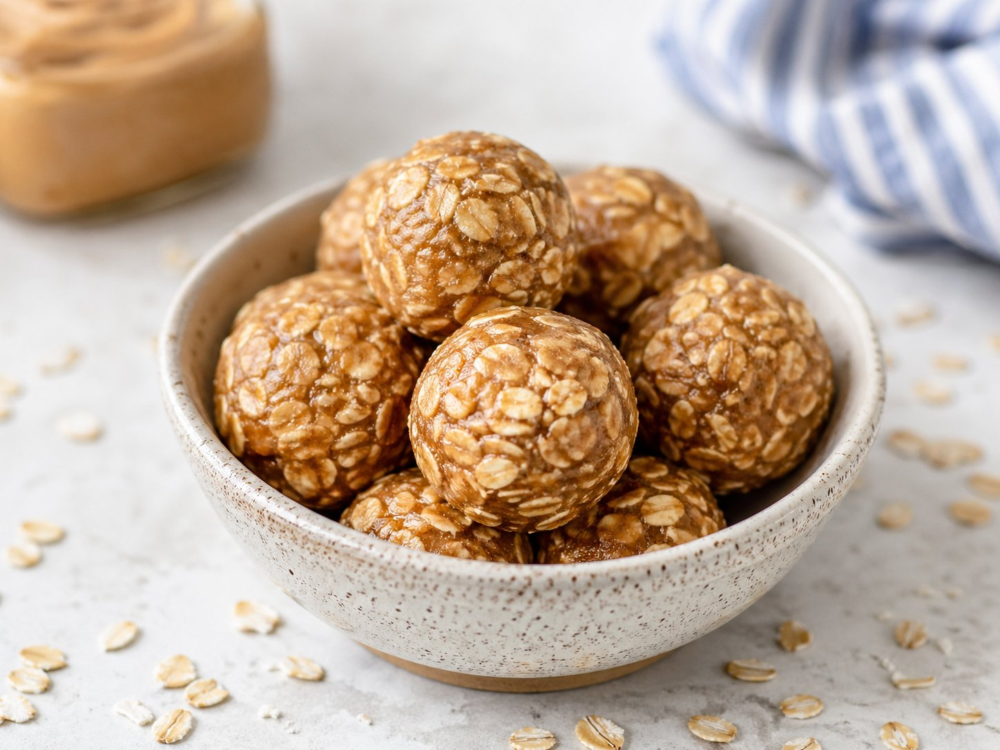

- Rolled oats149g5¼ oz
- Vanilla protein powder60g2⅛ oz
- Natural peanut or almond butterno added sugar120g4¼ oz
- Wholesome Yum Zero Sugar Honey50g1¾ oz
- Ground flaxseed19g⅔ oz
- Unsweetened cocoa powder9g⅓ oz
- Vanilla extract5ml1 tsp
- Cinnamon½ tsp½ tsp
- Salt1 pinch1 pinch
- 1
Combine rolled oats, protein powder, ground flaxseed, cocoa powder, cinnamon, and salt in a large bowl. Whisk until evenly mixed — this prevents protein powder clumps later.
- 2
Add nut butter, zero sugar honey, and vanilla extract to the dry mix. Stir well until a thick dough forms. The honey substitute acts as the binder — no extra liquid needed.
- 3
Press a small amount between your fingers — it should hold together without crumbling or sticking. Too dry? Add 5–10g more honey. Too wet? Add a small handful of oats.
- 4
Scoop ~32g of dough per ball and roll between your palms. If the dough is sticking, chill for 10 minutes first — cold dough is much easier to handle.
- 5
Place on a parchment-lined plate or container. Cover and refrigerate overnight (minimum 30 min). Overnight is best — oats fully absorb moisture and balls firm up properly.
Up to 1 week in an airtight container in the fridge. To freeze: lay individually on a tray first, then transfer to a bag — lasts 2 months frozen.
Macros vary by brand. Whey + peanut butter = lower calorie end. Plant protein + almond butter = slightly higher.